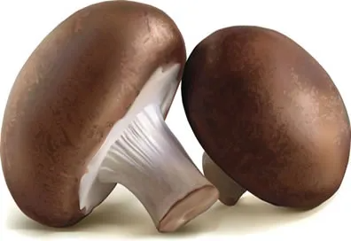

Importância dos Fungos
Os fungos são organismos eucariontes que apresentam nutrição heterotrófica, ou seja, não conseguem produzir seu próprio alimento. Seus principais representantes são os cogumelos, orelhas-de-pau, leveduras e bolores. Algumas espécies de fungos trazem grandes prejuízos aos seres humanos, como a deterioração de alimentos, doenças como candidíase, pano branco, micoses, aspergilose pulmonar etc., no entanto, outras espécies são extremamente importantes, como veremos a seguir.
Como dissemos anteriormente, os fungos são organismos heterótrofos e se alimentam de moléculas orgânicas retiradas da matéria orgânica. Essa matéria orgânica da qual eles retiram essas moléculas é proveniente de cadáveres e restos de plantas e animais. Por esse motivo, eles são chamados de saprófagos e, juntamente com as bactérias, decompõem a matéria orgânica, fazendo a reciclagem de nutrientes na natureza e impedindo o acúmulo de lixo orgânico.
Algumas espécies de fungos como o Agaricus campestris e o Lentinus edodes, conhecidos respectivamente como champignon e shitake, são amplamente utilizados no preparo de diversos pratos da gastronomia.
Além desses fungos, há os que são utilizados na fabricação de queijos, como o Penicillium roqueforti, utilizado na produção do queijo roquefort, e o Penicillium camembertii, utilizado na fabricação do queijo camembert.
Já as leveduras, como o Saccharomyces cerevisae, são empregadas na fabricação de alimentos como pães, roscas, bolos etc. Elas são utilizadas como fermento, pois conferem à massa leveza e maciez. Em bebidas alcoólicas, como a cerveja, uísque e saquê, o Saccharomyces cerevisae também é empregado, mas na produção de vinho, o fungo utilizado é o Saccharomyces ellipsoideus.
Além de serem importantes como decompositores, na indústria alimentícia e de bebidas, os fungos também são muito importantes na indústria farmacêutica, na produção de antibióticos como a penicilina, descoberta por Alexander Fleming no ano de 1929, que é amplamente empregada nos dias atuais.